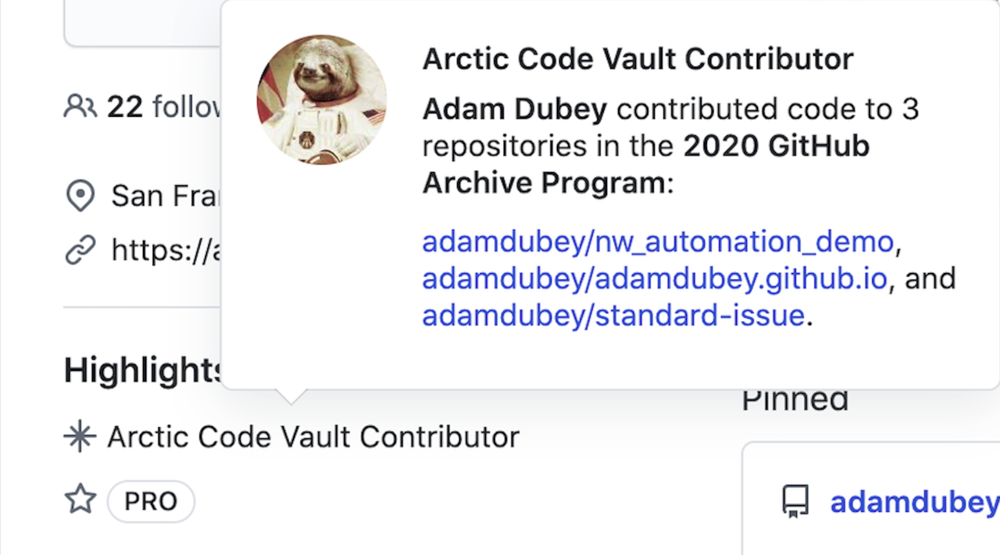

Journey to the Crypt of the Arctic
In a decommissioned coal mine around 77.8750° N, 20.9752° E…
Umm, what?
Like many other engineers that awoke on the morning of 16 July 2020 to find a new shiny piece of flair on their own Github profiles, I too found myself wondering what was going on. Upon spending time reading through some early posts on both HN and Reddit, there still wasn't a very clear answer as to what this new “Arctic Badge” was all about.
After some time later that day, more information surfaced and an understanding was reached, but I wasn't satisfied with the generic answer of “Your code is now preserved in the archive, Congrats! Have some flair."
Velkommen til Norge! 👋🇳🇴
Apparently, I forgot to read the memo published by Github sometime late 2019 informing everyone to “ready-up” their projects to hopefully be selected for the archival process. Oh well. At any rate it doesn't matter much now, as at the time all I could figure is “Now a piece of me lives somewhere in Norway now… Awesome!".

Luckily, only a few of my own projects1 were chosen - not really sure why based on criteria, but also not complaining! Even still, I had been captivated by this mysterious profile badge and wanted to learn more about the entire archival project that Github was doing. I'd say it's a pretty big deal to archive a huge multi-terabyte snapshot and preserve it in frozen ground.
Github published this article at some point later that same day explaining the overall process of how they managed to capture and print off all the data onto film, and I must say it’s a very interesting process, especially if you have ever worked with film before!
While I can't say with any certainty that the data will be able to be decoded hundreds of years from now whenever the vault is unsealed, I mean, it'll probably be fine, right?, it's still a significant milestone for everyone within the community as we are all now forever etched within the film of time, buried within the Crypt of the Arctic.
See you Space Cowboy ✌️
Ultimately nothing has really changed, and the reality is way more data than we can even fathom gets archived every day from various sources, without us knowing or being aware in most cases. While this may not seem like much to most, I feel it's important to just take a moment to really appreciate being apart of a much larger community, one that knows no bounds, one that is willing to enable creative thinking to solve all sorts of challenges, and most of all, one that is all united by collaborating together to wander into the unknown, fueled by sheer curiosity and a desire to learn.
“Life isn’t just about passing on your genes. We can leave behind much more than just DNA. Through speech, music, literature and movies… what we’ve seen, heard, felt anger, joy and sorrow, these are the things I will pass on. That’s what I live for. We need to pass the torch, and let our children read our messy and sad history by its light. We have the magic of the digital age to do that with. The human race will probably come to an end some time, and new species may rule over this planet. Earth may not be forever, but we still have the responsibility to leave what trace of life we can. Building the future and keeping the past alive are one in the same thing.” - Snake
-
Dear future being, you now are the proud recipient of this website, some configuration files and quick reference notes, and also an End-to-End testing tool. Enjoy! Also, the answer is 42.↩